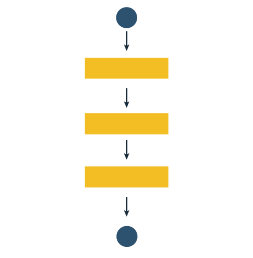

Repetições
São estruturas que permitem que a mesma tarefa seja executada repetidamente.
A estrutura de controle mais simples é a sequência, nela as tarefas são executadas sequencialmente, linha a linha, bloco por bloco, até o final da estrutura.
Nesse tipo de estrutura, o bloco aparece no código repetidas vezes, tornando a tarefa trabalhosa e longa, além de limitar o número de repetições à quantidade de vezes que o bloco foi escrito.
Repetições em Looping ou Laço
Funciona parcialmente como as condições, um teste lógico é executado e o valor (verdadeiro ou falso) define se a próxima tarefa será executada.
No entanto, o comportamento após a execução da tarefa em uma repetição é diferente de uma condição, ao invés de seguir a sequência até o próximo bloco, em uma repetição o caminho volta para a expressão lógica que será testada novamente (formando um looping ou laço).
A tarefa será executada enquanto o resultado da expressão for verdadeiro, uma vez que o resultado se apresentar falso, o laço de repetição se "quebra" e o fluxo continua para o bloco seguinte.
A declaração usada para criar um laço de repetição é formado pela palavra-chave while e uma condição (ou seja, um teste) entre parênteses.
while (condição) {
bloco;
}
Dentro das chaves vai o bloco a ser executado caso o teste seja verdadeiro.
O exemplo acima representa uma estrutura de repetição com teste lógico no ínicio da expressão, ou seja, a condição (teste) aparece antes e somente se for verdadeira, o bloco é executado.
let numeroPasso = 1;
while (numeroPasso <= 4) {
console.log("Passo " + numeroPasso)
numeroPasso++
}
Esse exemplo representa um contador de passos. A condição é que o bloco seja executado enquanto o contador for menor ou igual a 4.
O trecho numeroPasso++ significa que o número atribuído ao passo recebe a ele mesmo + 1 (numeroPasso = numeroPasso + 1). Essa expressão serve para que cada vez que o bloco for executado, seja somado +1 ao contador.
Existe também a estrutura com Teste Lógico no Final. Como o nome sugere, a condição aparece após o bloco, isso garante que ele será executado pelo menos uma vez, mesmo que o teste se apresente falso.
Para declarar esse tipo de repetição, deve-se utilizar a palavra-chave do seguido do bloco a ser executado, dentro de chaves. Após o fechamento dessa declaração, vem a palavra-chave while juntamente com a condição a ser testada.
do {
bloco
} while (condição)
Adaptando o exemplo anterior, do contador de passos, para a estrutura com teste lógico no final da expressão, temos:
let numeroPasso = 1;
do {
console.log("Passo " + numeroPasso)
numeroPasso++
} while (numeroPasso === 0)
Consegue-se notar que mesmo a condição tendo sido falsa, o bloco foi executado por estar antes do teste, contudo o laço se "quebra" e o bloco não torna a se repetir.